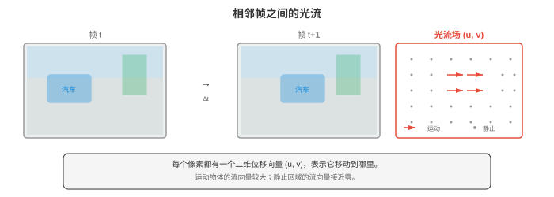

视频与三维视觉¶
视频与三维视觉将图像理解扩展至时间域和空间域。本节涵盖光流、视频分类（3D CNN、TimeSformer）、目标跟踪（SORT、DeepSORT）、动作识别、深度估计（单目和立体）、点云、NeRF 和三维高斯泼溅。
- 第 01 至 04 节将图像视为孤立的快照。但视觉世界是连续的：物体会移动，场景会变化，也存在深度。本节将计算机视觉扩展到时间域（视频）和空间域（三维），介绍模型如何理解运动、跟踪物体、估计深度和重建场景。
大白话
前面主要研究一张静态照片；这里开始处理“物体怎么动”和“物体离我多远”这两个现实问题。
- 视频（video）是按时间采集的一系列图像（帧）。以每秒 30 帧计，一段 10 秒的视频包含 300 帧。关键挑战是建模时间维度（temporal dimension）：物体如何移动、场景如何演化，以及如何关联各帧的信息？
大白话
视频就是按时间排列的照片，难点不只是看每张图，还要把前后帧里的同一件事连接起来。
- 光流（optical flow）估计相邻两帧间像素的表观运动。对于第 \(t\) 帧的每个像素，光流产生一个二维位移向量 \((u, v)\)，指向该像素在第 \(t+1\) 帧中移动的位置。结果是与图像同尺寸的稠密运动场。
大白话
光流给每个像素画一支小箭头，箭头方向和长度分别表示它往哪儿、移动了多远。

- 光流建立在亮度恒定假设（brightness constancy assumption）上：像素在移动时其强度不变。若位置 \((x, y)\) 的像素在第 \(t\) 帧中强度为 \(I(x, y, t)\)，并移动 \((u, v)\)，时间间隔很小，为 \(\delta t\)：
大白话
这个假设认为同一个点只是换了位置、亮度没变；现实中的光照变化会让它不完全成立。
- 取一阶泰勒展开（第 03 章）并除以 \(\delta t\)：
大白话
这一步把“前后亮度相同”的说法近似成一个线性方程，方便直接求运动速度。
- 其中 \(I_x, I_y\) 是空间梯度（第 01 节的 Sobel），\(I_t\) 是时间梯度（连续帧之间的差分）。这就是光流约束方程（optical flow constraint equation）。一个方程、两个未知量（\(u, v\)），因此还需要额外约束。
大白话
单个像素只有一道方程却要解两个方向，所以只看一个点时答案不够，需要借附近像素帮忙。
- Lucas-Kanade 假设在小窗口内（如 5x5 像素）光流恒定。这给出超定系统（25 个方程、2 个未知量），用最小二乘法求解（第 06 章的法方程）：
大白话
Lucas-Kanade 假定小窗口里的像素一起朝同方向动，把许多不够用的小方程合成一个可以求解的大方程。
- 该 2x2 矩阵是第 01 节的结构张量（也是 Harris 角点检测使用的矩阵）。Lucas-Kanade 对小运动有效，但当物体在帧间移动超过数个像素时会失效。
大白话
角点附近信息最丰富，容易判断怎么动；位移太大时，上一帧附近已经找不到它了。
- Farneback 方法对每个像素邻域拟合多项式展开，并估计最能解释帧间变化的位移场。它产生稠密光流（每个像素一个向量），能处理比 Lucas-Kanade 更大的运动。
大白话
Farneback 给每个区域拟合更平滑的变化模型，因此能得到整张图的运动箭头，也能应付稍大的移动。
- 现代深度学习光流（deep learning optical flow）方法（FlowNet、RAFT）从帧对端到端学习预测光流。RAFT（Recurrent All-Pairs Field Transforms，Teed 和 Deng，2020）计算两帧中所有像素对之间的四维相关体，并使用基于 GRU 的更新算子迭代细化光流估计。RAFT 达到最先进准确率，已成为标准光流主干网络。
大白话
RAFT 会大范围比较两帧的像素对应关系，再多次修正运动箭头，因而比传统局部规则更准。
- 双流网络（two-stream networks）（Simonyan 和 Zisserman，2014）是视频理解的早期方法。一条流处理单帧 RGB 图像（外观），另一条流处理一组光流帧（运动）。两条流在末端融合（通过平均或拼接）。该架构明确区分“物体长什么样”和“它们如何运动”。
大白话
一路看画面里有什么，一路看画面怎么动，最后把外观和动作证据合在一起。
- 三维卷积网络（3D Convolutional Networks）将二维卷积扩展到时间维度。三维卷积应用大小为 \(k \times k \times k_t\) 的滤波器，覆盖空间和时间维度，直接学习时空特征。
大白话
3D 卷积的窗口不只覆盖一张图，还覆盖连续几帧，因此能直接看出动作随时间的变化。
- C3D（Tran 等，2015）堆叠使用 3x3x3 滤波器的三维卷积，证明时间卷积无需显式光流也能学习运动特征。其成本很高：三维卷积的参数量和计算量是对应二维卷积的 \(k_t\) 倍。
大白话
C3D 让网络自己从视频里学运动，不必先算光流；代价是每层都要多处理时间维度，算力更贵。
- I3D（Inflated 3D，Carreira 和 Zisserman，2017）采用更实用的方法：从预训练二维 CNN（如 Inception 或 ResNet）开始，通过沿时间维度重复权重并除以 \(k_t\)，将所有二维滤波器“膨胀”为三维。这将 ImageNet 预训练迁移到视频，同时增加时间建模。二维 \(k \times k\) 滤波器变为 \(k \times k \times k_t\) 滤波器，并初始化为 \(W_{\text{3D}}[:,:,j] = W_{\text{2D}} / k_t\)，适用于所有时间位置 \(j\)。
大白话
I3D 把已经会看图片的二维网络沿时间方向复制开，让旧知识直接迁移到视频，而不是从零学三维卷积。
- SlowFast 网络（SlowFast Networks）（Feichtenhofer 等，2019）使用两个工作在不同时间分辨率的并行路径：
大白话
SlowFast 认为画面外观变化慢、动作变化快，所以用两条不同节奏的路分别处理。
-
Slow 路径（Slow pathway）以低帧率处理帧（如每 16 帧取一帧），使用高空间分辨率和较多通道，捕捉精细空间细节。
大白话
Slow 路径抽帧较少但每帧看得细，适合识别人物、物体和场景长什么样。
-
Fast 路径（Fast pathway）以高帧率处理帧（每 2 帧取一帧），使用较低空间分辨率和较少通道（通常为 Slow 路径的 \(1/8\)），捕捉快速时间变化。
大白话
Fast 路径看得更频繁但画面更粗，重点是抓住挥手、击球这类快速变化。
-
横向连接通过步幅卷积将 Fast 信息融合到 Slow。
大白话
横向连接把快速运动线索送给 Slow 路径，让它的精细画面也知道刚才发生了什么动作。
- 关键洞见是空间和时间信息有不同带宽需求：物体外观变化缓慢，而运动可以很快。SlowFast 在设计上匹配这种不对称性。
大白话
你不需要每一帧都重新确认“这是杯子”，却需要高频观察它有没有被迅速拿起，这就是两条路径的理由。
- TimeSformer（Bertasius 等，2021）将视觉 Transformer 应用于视频。它将完整时空注意力（成本为难以承受的 \(O((T \times N)^2)\)，其中有 \(T\) 帧、每帧有 \(N\) 个图像块）分解为分离注意力（divided attention）：每个块交替进行时间注意力（每个图像块在相同空间位置跨时间关注）与空间注意力（每个图像块在同一帧内跨空间关注）。这将成本从 \(O(T^2 N^2)\) 降至 \(O(T^2 + N^2)\)。
大白话
TimeSformer 不让所有时空小块一次两两比较，而是先沿时间看、再在单帧里看，省下大量计算。
- VideoMAE（Tong 等，2022）将掩码自编码器思想（第 04 节）扩展到视频。它使用极高掩码比例（90-95%），因为视频有很高时间冗余：相邻帧几乎相同，遮蔽大多数图像块后仍留有足够信息用于重建。VideoMAE 在无标签视频上预训练 ViT 主干网络，再迁移至下游任务。
大白话
相邻视频帧太像了，所以 VideoMAE 可以遮住绝大多数块，仍逼模型利用剩下的时间线索补全内容。
- 动作识别（action recognition）将视频片段分类为众多动作类别之一（如“跑步”“烹饪”“弹吉他”）。它是图像分类的视频对应物。标准基准包括 Kinetics-400（400 个动作类别、约 30 万段视频）、Something-Something（174 种需要时间推理的细粒度动作）和 ActivityNet（200 个类别及长的未裁剪视频）。
大白话
动作识别给一段短视频贴动作标签，重点不是这一帧有什么，而是整个过程发生了什么。
- 时间动作检测（temporal action detection）超越了分类：给定一段长的未裁剪视频，找出每个动作的开始时间、结束时间和类别。这是目标检测在时间上的对应物。ActionFormer 等方法使用 Transformer 处理时间特征并预测动作边界。
大白话
时间动作检测像在长视频时间轴上画框，既要认出动作，也要准确指出它从第几秒开始、到第几秒结束。
- 视频目标跟踪（video object tracking）在第一帧识别出特定物体后，跨帧跟随它。
大白话
跟踪不只是每帧重新找人，还要保证同一个人一直拿着同一个身份编号。
- SORT（Simple Online and Realtime Tracking，Bewley 等，2016）将检测模型（独立检测每一帧中的物体）与用于运动预测的卡尔曼滤波器（Kalman filter）和用于分配的匈牙利算法（Hungarian algorithm）结合。
大白话
SORT 让检测器报出每帧目标，再用预测和配对规则把这些零散检测串成连续轨迹。
- 卡尔曼滤波器为每个被跟踪物体维护状态估计（位置、速度、大小），并用线性运动模型预测它在下一帧的位置。新检测到达时，卡尔曼滤波器将预测与观测按各自不确定性加权组合，更新估计。这是第 05 章贝叶斯更新在跟踪中的应用。
大白话
卡尔曼滤波器先按刚才速度猜目标会在哪，再把新观测按可靠程度融合，既不盲信预测也不盲信检测。
- 匈牙利算法解决双线性分配问题：给定 \(M\) 个被跟踪物体和 \(N\) 个新检测，寻找使总成本最小的最优一对一匹配（使用第 03 节的 IoU 距离）。未匹配的检测开始新轨迹，未匹配的轨迹在宽限期后终止。
大白话
它像给旧轨迹和新检测做全局配对，避免两个目标各自抢到同一个检测框。
- DeepSORT 通过增加深度外观特征（deep appearance feature）扩展 SORT：每个检测到的物体通过小型 CNN，产生外观嵌入（描述子向量）。匹配成本结合 IoU 距离和嵌入空间中的余弦距离（第 01 章）。这处理遮挡和重识别：即使一个物体在另一个物体后面消失数帧，其重现时仍可由外观嵌入重新匹配。
大白话
DeepSORT 除了看框的位置，还看这个目标长得像不像，因此短暂遮挡后更容易认回同一个人。
- ByteTrack（Zhang 等，2022）通过使用每个检测（包括低置信度检测）改进跟踪。大多数跟踪器会丢弃低于置信度阈值的检测。ByteTrack 先将高置信度检测匹配至现有轨迹，再将剩余低置信度检测匹配至未匹配轨迹。这可恢复暂时被遮挡或模糊的物体（因此它们的检测置信度低）。
大白话
ByteTrack 不急着扔掉低分检测：先用可靠框配对，再用低分框补救被遮挡或模糊的旧轨迹。
- 三维视觉（3D vision）恢复二维图像投影中丢失的第三空间维度（第 01 节）。
大白话
三维视觉要从平面照片或传感器数据中找回前后距离和真实空间结构。
- 深度估计（depth estimation）预测场景中每个点到相机的距离。
大白话
深度图告诉你每个像素离镜头近还是远，是让机器获得距离感的基础。
- 立体深度（stereo depth）使用两台相机，它们相距已知基线 \(b\)。同一物点在左右图像中会出现在不同的水平位置（该偏移称为视差（disparity） \(d\)）。深度与视差成反比：
大白话
双眼相机看到的同一点偏得越多，说明它越近；偏得越少，说明它越远。
- 其中 \(f\) 是焦距，\(b\) 是基线距离。计算视差要求在两张图像中寻找对应点（立体匹配），这是沿水平扫描线的一维搜索（相机水平对齐时，三维中同一高度的点会投影到两张图像的同一行）。
大白话
相机并排摆正后，只需在同一行找同一个点，搜索从二维缩成一维，立体匹配会简单很多。
- 单目深度估计（monocular depth estimation）从单张图像预测深度，这在根本上是不适定的（无限多个三维场景可产生同一二维图像）。但人类能利用相对大小、纹理梯度、遮挡和大气雾霾等线索轻松完成。深度网络从训练数据中学习这些线索。
大白话
单张照片没有真正的三角测量信息，模型只能利用“近的大、远的小”等经验猜出相对远近。
- MiDaS 和 Depth Anything 等模型从单张图像预测相对深度图（对物体远近排序）。它们在多样数据集上以尺度不变损失训练，尽管理论上存在歧义，仍能产生非常准确的结果。
大白话
这类模型通常更擅长回答谁比谁远，不一定知道准确的米数；多样训练数据让这种判断更可靠。
- 点云（point clouds）是三维点 \((x, y, z)\) 的集合，可选地带有颜色或其他属性，由 LiDAR 传感器或立体重建采集。与图像不同，点云没有顺序且分布不规则。
大白话
点云像在真实空间里撒下一团带坐标的点，它直接有三维位置，却不像图片那样整齐排成格子。
- PointNet（Qi 等，2017）通过对每个点独立应用共享 MLP，再用最大池化聚合（这对排列不变，解决顺序问题），直接处理点云。PointNet++ 增加层级分组，在多个尺度捕捉局部结构。
大白话
PointNet 先用同一规则看每个点，再从所有点里挑最强特征，所以把点顺序打乱也不会影响结果。
- 神经辐射场（Neural Radiance Fields，NeRFs）（Mildenhall 等，2020）将三维场景表示为连续函数：它把三维位置 \((x, y, z)\) 和视线方向 \((\theta, \phi)\) 映射为颜色 \((r, g, b)\) 和密度 \(\sigma\)。该函数由 MLP 参数化：
大白话
NeRF 把场景变成一个可查询函数：问某处、从某方向看，会得到什么颜色，以及那里有多不透明。
- 为渲染一个像素，从相机穿过该像素向场景发射一条射线。沿射线采样点，MLP 预测每点的颜色与密度。像素颜色通过体渲染（volume rendering）计算：沿射线积分由密度加权的颜色：
大白话
渲染一个像素时，NeRF 沿视线连续取样，把路上每个位置的颜色按被遮挡程度混合起来。
- 其中 \(T(t) = \exp(-\int_{t_n}^{t} \sigma(\mathbf{r}(s)) \, ds)\) 是累积透射率（至今为止被吸收的光量）。实践中，该积分通过沿射线采样 \(N\) 个点并求和近似：
大白话
透射率表示光走到这里还剩多少；实际计算不做连续积分，而是在射线上取有限个点相加。
- NeRF 通过最小化渲染像素与一组带位姿照片中的真实像素之间的 MSE 来训练。训练后，NeRF 可从任意相机位置渲染照片级真实的新视角。其限制是速度：渲染需评估 MLP 数百万次（每个像素的每个采样点一次），因此很难实时渲染。
大白话
用多角度照片把 NeRF 训好后，可以从没拍过的位置看场景；但每个像素都要反复问网络，速度很慢。
- 三维高斯泼溅（3D Gaussian Splatting）（Kerbl 等，2023）以一组三维高斯元而非连续体函数表示场景，解决 NeRF 的速度限制。每个高斯元包含三维位置（均值）、三维协方差矩阵（控制形状和方向）、不透明度和颜色（以球谐函数表示视角相关效应）。
大白话
高斯泼溅不用查询连续网络，而是用许多可拉伸、带颜色和透明度的小椭球近似场景。
- 渲染将每个三维高斯元投影到图像平面（得到二维高斯“泼溅”），按深度排序，并用 alpha 混合从前到后合成。这是可在 GPU 上实时运行（100+ FPS）的光栅化过程，速度比 NeRF 的射线步进高几个数量级。高斯泼溅达到或超过 NeRF 质量，同时支持实时渲染。
大白话
把这些小椭球投到屏幕上并按前后顺序叠加，就能用 GPU 快速画出画面，比逐像素射线查询快很多。
- SLAM（Simultaneous Localisation and Mapping，同时定位与建图）是在未知环境中构建地图，同时跟踪相机在其中位置的问题。它是机器人学、自动驾驶和 AR 的基础。
大白话
SLAM 是边走边画地图、同时还要知道自己走到哪儿；地图和位置会互相帮助校正。
- 视觉里程计（visual odometry）通过跨图像跟踪特征，逐帧估计相机运动。连续帧间匹配特征点（第 01 节的 SIFT、ORB），并从对应关系中利用本质矩阵（essential matrix）估计相机旋转和平移（该矩阵编码两个视图的几何关系，推导自第 01 节的内参和外参）。
大白话
视觉里程计看同一批角点在下一帧往哪里移，从这些变化反推出相机自己转了多少、走了多远。
- 基于特征的 SLAM（feature-based SLAM）通过维护持久地图扩展视觉里程计。ORB-SLAM（Mur-Artal 等，2015）是最广泛使用的基于特征的 SLAM 系统。它有三个并行线程：
大白话
ORB-SLAM 不只估计这一步怎么走，还把可靠特征留在地图里，并同时处理跟踪、添图和纠错。
-
跟踪（tracking）：将每个新帧中的 ORB 特征与地图匹配，使用 PnP（Perspective-n-Point）和 RANSAC 估计相机位姿。
大白话
跟踪线程把眼前特征与已有地图对上，筛掉错误匹配后算出相机此刻的位置和朝向。
-
局部建图（local mapping）：从匹配特征三角化新的地图点，通过光束法平差优化它们位置（最小化能看到每个点的所有视图中的重投影误差）。
大白话
局部建图把新看到的特征变成三维地图点，再用多个视角一起调整位置，减少投影误差。
-
回环检测（loop closure）：检测相机何时重访先前已建图的区域（使用词袋模型），再通过全局优化地图来校正累计漂移。
大白话
回到以前来过的地方时，系统发现地图首尾应当接上，就能一次性纠正一路累积的偏差。
- LiDAR SLAM 使用 LiDAR 传感器的三维点云替代（或补充）相机图像。LiDAR 提供直接深度测量，使几何估计更稳健，但硬件成本更高。LOAM（LiDAR Odometry and Mapping）等方法用迭代最近点（ICP）对齐，将连续扫描间的点云配准。
大白话
LiDAR 直接量出距离，暗光或纹理少时通常比纯相机稳，但传感器更贵；ICP 负责把前后两团点对齐。
- 视觉惯性 SLAM（Visual-Inertial SLAM）融合相机数据与 IMU（加速度计 + 陀螺仪）测量。IMU 提供高频旋转和加速度估计，弥合相机帧之间的间隔，并应对快速运动或暂时失去视觉特征的情况。
大白话
相机看得细但帧率有限，IMU 频率高但会漂；把两者结合，快速晃动或短暂看不见时也能维持跟踪。
- VR/AR 应用是计算机视觉要求最高的消费者之一。
大白话
VR/AR 必须同时理解环境、跟住头部和手部、快速画面，任何一环慢或错都会立刻影响体验。
- 姿态估计（pose estimation）从图像确定人体（或面部、手部）的位置和方向。身体姿态（body pose）通常表示为一组二维或三维关键点位置（关节：肩、肘、腕、髋、膝、踝）。OpenPose 和 MediaPipe 等模型使用热力图回归预测这些关键点：每个关节对应一个热力图，峰值表示关节位置。
大白话
姿态估计不是画整个人的轮廓，而是先找肩、肘、膝等关键关节，再用这些点表示身体动作。
- 自顶向下（top-down）方法先用边界框检测器（第 03 节）检测人物，再在每个框内估计姿态。自底向上（bottom-up）方法先检测图像中的所有关键点，再使用部件亲和场（编码相连关节关联关系的向量场）将它们分组为不同个体。
大白话
自顶向下先分人再找关节，思路直观；自底向上先找满图关节再拼人，多人场景更高效但配对更难。
- 场景重建（scene reconstruction）从传感器数据构建环境的三维模型。在 AR 中，它支持将虚拟物体放到真实表面上、将虚拟物体遮挡在真实物体后，并投射虚拟阴影。实时场景重建方法（如 ARKit 和 ARCore 中基于深度传感器的系统）构建随用户移动而更新的稀疏环境网格。
大白话
AR 要让虚拟物体像真的放在桌上，就得先知道桌面、墙面和真实物体在三维空间里的位置。
- VR 中的实时渲染（real-time rendering）约束极端：双眼都需要在 90+ FPS 下分别渲染（避免晕动症），从头部运动到显示更新的延迟需低于 20 毫秒。注视点渲染（foveated rendering）（使用眼动追踪，只在用户注视位置高分辨率渲染）和重投影（reprojection）（根据新头部姿态扭曲前一帧，在下一帧渲染时填补间隙）等技术是满足这些约束的关键。
大白话
VR 对延迟极其敏感：眼睛正看的地方必须清楚，头一动画面就得跟上，否则人会不舒服。
- 实时神经渲染（三维高斯泼溅）、稳健跟踪（视觉惯性 SLAM）和高效姿态估计的融合，正在使照片级真实、可交互的 AR/VR 体验越来越可行。
大白话
当场景能快速重建、设备能稳定定位、人和手也能被准确理解时，AR/VR 才会从演示变成自然互动。
编程任务（使用 CoLab 或 notebook）¶
-
从零实现 Lucas-Kanade 光流算法。计算方块向右移动时两个合成帧之间的光流。
import jax.numpy as jnp import matplotlib.pyplot as plt def lucas_kanade(frame1, frame2, window_size=5): """Lucas-Kanade optical flow.""" # Compute gradients Ix = jnp.zeros_like(frame1) Iy = jnp.zeros_like(frame1) It = frame2 - frame1 # Sobel-like gradients Ix = Ix.at[1:-1, :].set((frame1[2:, :] - frame1[:-2, :]) / 2) Iy = Iy.at[:, 1:-1].set((frame1[:, 2:] - frame1[:, :-2]) / 2) H, W = frame1.shape half_w = window_size // 2 u = jnp.zeros_like(frame1) v = jnp.zeros_like(frame1) for i in range(half_w, H - half_w): for j in range(half_w, W - half_w): Ix_win = Ix[i-half_w:i+half_w+1, j-half_w:j+half_w+1].ravel() Iy_win = Iy[i-half_w:i+half_w+1, j-half_w:j+half_w+1].ravel() It_win = It[i-half_w:i+half_w+1, j-half_w:j+half_w+1].ravel() A = jnp.stack([Ix_win, Iy_win], axis=1) ATA = A.T @ A ATb = -A.T @ It_win # Check if the system is well-conditioned det = ATA[0,0] * ATA[1,1] - ATA[0,1] * ATA[1,0] if jnp.abs(det) > 1e-6: flow = jnp.linalg.solve(ATA, ATb) u = u.at[i, j].set(flow[0]) v = v.at[i, j].set(flow[1]) return u, v # Create two frames: a white square that moves right frame1 = jnp.zeros((64, 64)) frame1 = frame1.at[20:40, 15:35].set(1.0) frame2 = jnp.zeros((64, 64)) frame2 = frame2.at[20:40, 20:40].set(1.0) # shifted 5 pixels right u, v = lucas_kanade(frame1, frame2, window_size=7) # Visualise fig, axes = plt.subplots(1, 3, figsize=(14, 4)) axes[0].imshow(frame1, cmap='gray'); axes[0].set_title('Frame 1'); axes[0].axis('off') axes[1].imshow(frame2, cmap='gray'); axes[1].set_title('Frame 2'); axes[1].axis('off') # Quiver plot of flow (subsample for clarity) step = 4 Y, X = jnp.mgrid[0:64:step, 0:64:step] axes[2].imshow(frame1, cmap='gray', alpha=0.5) axes[2].quiver(X, Y, u[::step, ::step], v[::step, ::step], color='#e74c3c', scale=50, width=0.005) axes[2].set_title('Optical Flow'); axes[2].axis('off') plt.tight_layout(); plt.show() # Check average flow in the moving region region_u = u[20:40, 15:35] print(f"Average horizontal flow in object region: {region_u[region_u != 0].mean():.2f} pixels") -
为二维目标跟踪实现简单卡尔曼滤波器。模拟带噪轨迹，并展示卡尔曼滤波器如何平滑估计。
import jax import jax.numpy as jnp import matplotlib.pyplot as plt def kalman_predict(x, P, F, Q): """Kalman filter prediction step.""" x_pred = F @ x P_pred = F @ P @ F.T + Q return x_pred, P_pred def kalman_update(x_pred, P_pred, z, H, R): """Kalman filter update step.""" y = z - H @ x_pred # innovation S = H @ P_pred @ H.T + R # innovation covariance K = P_pred @ H.T @ jnp.linalg.inv(S) # Kalman gain x_updated = x_pred + K @ y P_updated = (jnp.eye(len(x_pred)) - K @ H) @ P_pred return x_updated, P_updated # State: [x, y, vx, vy] dt = 1.0 F = jnp.array([[1, 0, dt, 0], # state transition [0, 1, 0, dt], [0, 0, 1, 0], [0, 0, 0, 1]]) H = jnp.array([[1, 0, 0, 0], # observation: we measure x, y [0, 1, 0, 0]]) Q = jnp.eye(4) * 0.01 # process noise R = jnp.eye(2) * 4.0 # measurement noise (noisy detector) # Simulate ground truth: circular motion n_steps = 50 t = jnp.linspace(0, 2 * jnp.pi, n_steps) true_x = 10 * jnp.cos(t) + 20 true_y = 10 * jnp.sin(t) + 20 # Noisy observations key = jax.random.PRNGKey(42) noise = jax.random.normal(key, (n_steps, 2)) * 2.0 obs_x = true_x + noise[:, 0] obs_y = true_y + noise[:, 1] # Run Kalman filter x = jnp.array([obs_x[0], obs_y[0], 0.0, 0.0]) # initial state P = jnp.eye(4) * 10.0 # initial uncertainty kalman_x, kalman_y = [], [] for i in range(n_steps): x, P = kalman_predict(x, P, F, Q) z = jnp.array([obs_x[i], obs_y[i]]) x, P = kalman_update(x, P, z, H, R) kalman_x.append(x[0]) kalman_y.append(x[1]) kalman_x = jnp.array(kalman_x) kalman_y = jnp.array(kalman_y) # Visualise plt.figure(figsize=(8, 8)) plt.plot(true_x, true_y, 'k-', linewidth=2, label='Ground Truth') plt.scatter(obs_x, obs_y, c='#e74c3c', s=20, alpha=0.5, label='Noisy Observations') plt.plot(kalman_x, kalman_y, '#3498db', linewidth=2, label='Kalman Filter') plt.legend(); plt.grid(alpha=0.3) plt.title('Kalman Filter Tracking') plt.xlabel('x'); plt.ylabel('y') plt.axis('equal'); plt.show() obs_error = jnp.mean(jnp.sqrt((obs_x - true_x)**2 + (obs_y - true_y)**2)) kalman_error = jnp.mean(jnp.sqrt((kalman_x - true_x)**2 + (kalman_y - true_y)**2)) print(f"Observation RMSE: {obs_error:.2f}") print(f"Kalman filter RMSE: {kalman_error:.2f}") print(f"Error reduction: {(1 - kalman_error/obs_error) * 100:.1f}%") -
实现简化的 NeRF 风格体渲染（volume rendering）流程。让光线穿过简单的三维场景（已知颜色和密度的球体），并沿每条光线积分，渲染出图像。
import jax import jax.numpy as jnp import matplotlib.pyplot as plt def render_ray(origin, direction, spheres, n_samples=64, t_near=1.0, t_far=6.0): """Volume render a single ray through a scene of spheres.""" t_vals = jnp.linspace(t_near, t_far, n_samples) deltas = jnp.concatenate([jnp.diff(t_vals), jnp.array([1e-3])]) colour = jnp.zeros(3) transmittance = 1.0 for i in range(n_samples): point = origin + t_vals[i] * direction # Compute density and colour at this point density = 0.0 point_colour = jnp.zeros(3) for center, radius, col, sigma in spheres: dist = jnp.linalg.norm(point - center) # Soft sphere: density falls off with distance from surface d = jnp.exp(-jnp.maximum(0, dist - radius) * sigma) * sigma density += d point_colour += d * jnp.array(col) # Normalise colour by total density point_colour = jnp.where(density > 1e-6, point_colour / density, point_colour) # Volume rendering equation alpha = 1.0 - jnp.exp(-density * deltas[i]) colour += transmittance * alpha * point_colour transmittance *= (1.0 - alpha) return colour # Scene: three coloured spheres spheres = [ (jnp.array([0.0, 0.0, 4.0]), 0.8, [1.0, 0.2, 0.2], 5.0), # red (jnp.array([1.5, 0.5, 5.0]), 0.6, [0.2, 1.0, 0.2], 5.0), # green (jnp.array([-1.0, -0.5, 3.5]), 0.5, [0.2, 0.2, 1.0], 5.0), # blue ] # Camera setup img_h, img_w = 64, 64 focal = 60.0 origin = jnp.array([0.0, 0.0, 0.0]) image = jnp.zeros((img_h, img_w, 3)) for i in range(img_h): for j in range(img_w): # Compute ray direction px = (j - img_w / 2) / focal py = -(i - img_h / 2) / focal direction = jnp.array([px, py, 1.0]) direction = direction / jnp.linalg.norm(direction) colour = render_ray(origin, direction, spheres) image = image.at[i, j].set(jnp.clip(colour, 0, 1)) plt.figure(figsize=(6, 6)) plt.imshow(image) plt.title('NeRF-style Volume Rendering\n(3 spheres)') plt.axis('off') plt.tight_layout(); plt.show() print(f"Image shape: {image.shape}") print(f"Rendered {img_h * img_w} rays with 64 samples each")